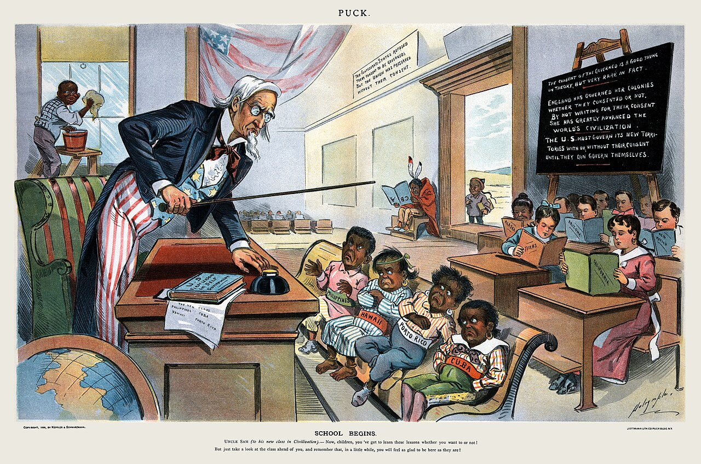

Directions: Study the cartoon and the background note, then answer the questions.

Background. Puck was a national humor magazine. In this cartoon of January 25, 1899, published while the Senate debated the Treaty of Paris, Uncle Sam stands as a schoolmaster before four new pupils labeled Philippines, Hawaii, Porto Rico, and Cuba. The lesson on the board behind him is headed United States First Lessons in Self-Government. Pupils labeled with the names of western states sit behind the new arrivals, reading. The figure for the Philippines is drawn as a caricature of a Filipino leader of the period, in the racial style American cartoonists of 1899 used for the peoples their country had taken.
annexation: the taking of territory into a country as its own
caricature: a drawing that exaggerates a person's features for comic or political effect
1. Identify two details in the cartoon that present the new territories as children who need teaching.
2. What position on annexation does the cartoon support? Answer from the details on the board and in the room, not from the date alone.
3. A member of the Anti-Imperialist League might have answered this cartoon in one sentence: the Philippines does not need a first lesson in self-government. Write the two-sentence answer, using one fact about the Philippine Republic and one phrase from the League platform.
1. Identify two details in the cartoon that present the new territories as children who need teaching. Accept any two: the four territories are drawn as small children in a classroom; Uncle Sam stands over them as the schoolmaster; the board announces First Lessons in Self-Government; the new pupils look unwilling or sullen at their desks while the older pupils, the western states, sit behind them as the model students who have already learned. [Blueprint 3]
2. What position on annexation does the cartoon support? Answer from the details on the board and in the room, not from the date alone. It supports annexation. School is presented as the natural and benevolent frame for American rule: the teacher is patient, the lesson is self-government itself, and the western states in the back row stand as proof that territories taught this way turn into states. Nothing in the room admits force, a war, or a Filipino government. [Blueprint 3]
3. A member of the Anti-Imperialist League might have answered this cartoon in one sentence: the Philippines does not need a first lesson in self-government. Write the two-sentence answer, using one fact about the Philippine Republic and one phrase from the League platform. Model answer: The Filipinos wrote a constitution at Malolos and inaugurated their own republic, with Aguinaldo as president, on January 23, 1899, two days before this cartoon appeared. To rule them anyway is what the League platform called the subjugation of a people, criminal aggression against the principle that governments rest on consent of the governed. Accept any answer pairing a republic fact (independence proclaimed June 12, 1898; the Malolos constitution; the inauguration) with a platform phrase (criminal aggression; consent of the governed; hostile to liberty). [Blueprint 3]
Teacher note on the image. The cartoon draws its Filipino, Hawaiian, Puerto Rican, and Cuban figures as racial caricatures, which was the standard style of American political cartooning in 1899. Name that fact for students rather than letting it pass as neutral draftsmanship: the drawing argues its case partly by making the new peoples look childlike and alien. This check is formative.